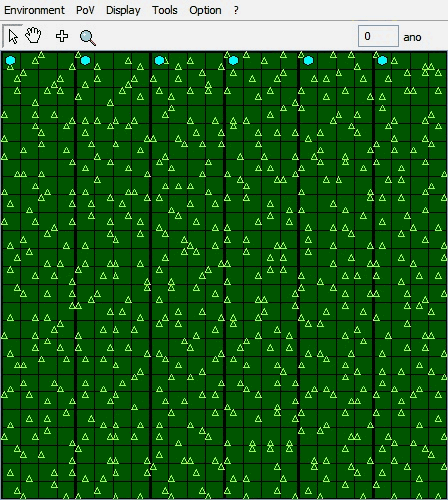
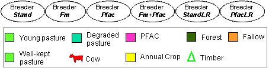

|
FloAgri: simulations and main results
Bommel, P., Sist, P., Piketty, M-G., Bendahan, A. B. Back to the introduction page of the model. Back to model description Each agent owns a single lot of 100 ha and it is not allowed to move to another farm nor to expand by buying new lots. Each lot has a similar vegetation cover. The agents vary only on their specific activities (FM, PFAC and/or LR compliance). For standard simulations, each family has 3 workers and 3 children. It starts with 7 200 R$ (members × initial cash/person = 6 × 1 200 R$) and 468 available workdays (workers × work days per season = 3×156). In its standard version, the model is deterministic: no randomness is involved during the simulations. Thus, from a given initial state, it will always produce the same output for each strategy (Note that a stochastic version -with randomness- will be used in the analysis in order to test the impact of sickness probability or when specifying a new initial land cover).   Example of land cover evolution for a standard simulation for 6 different farmsStarting from the same state, the land cover at the end of a simulation (40 years) is quite different depending on the performed scenario. After 12 years (Fig. 3 bottom), the conventional breeder (StandStrat) for example has converted all his land into pasture (this period is called installation phase). In contrast, the agents in charge of FM as well as the agents who are artificially obliged to respect the law, have maintained their LR (80 ha). Their installation phase is much shorter (5 years). By looking at the agents’ incomes, as noticed previously, the output data cannot be rigorously compared with real incomes as the agents keep their standard of living whatever their savings. What is more relevant is to compare the economic results between the agents in order to rank the incomes’ levels according to the scenarios. Scenarios resultsThe impacts of FM and PFAC for agents respecting their Legal ReserveGiven the fact that the agents FmStrat, Fm+Pfac, StandLR and PfacLR do all respect their LR, the efficiencies are compared on the same area available to cultivate (20 ha).Indeed, at the end of the third year, each agent has deforested his authorized surface. The rest remains forest and only the agents FmStrat and Fm+Pfac can use it to harvest timber during the FM cycles.Back to the introduction page of the model.
|